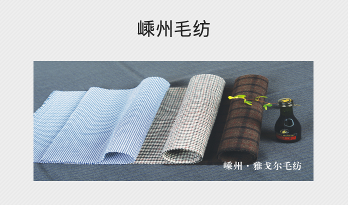

嵊州雅戈尔毛纺织有限公司系雅戈尔集团股份有限公司全资子公司，成立于20010年12月，注册资本3000万美元，总投资额5000万美元。公司地处嵊州市城东经济开发区东区，占地面积138余亩，建筑面积43800余平方米；现有员工420余名，其中高中级工程技术人员占总人数的15%以上。目前，公司已形成年产精纺呢绒450万米的能力，产品主要立足高端客户。雅戈尔毛纺未来将继续坚定企业与时俱进、自主创新的发展精神，围绕“不求最大，但求最优”的发展定位，紧扣“品种领先、品质优秀、管理规范、业绩良好”的经营方针，为成为中国毛纺行业的代表企业而继续不懈努力与奋斗。